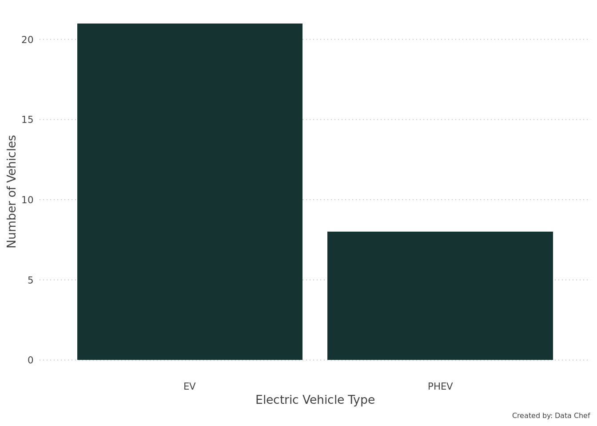
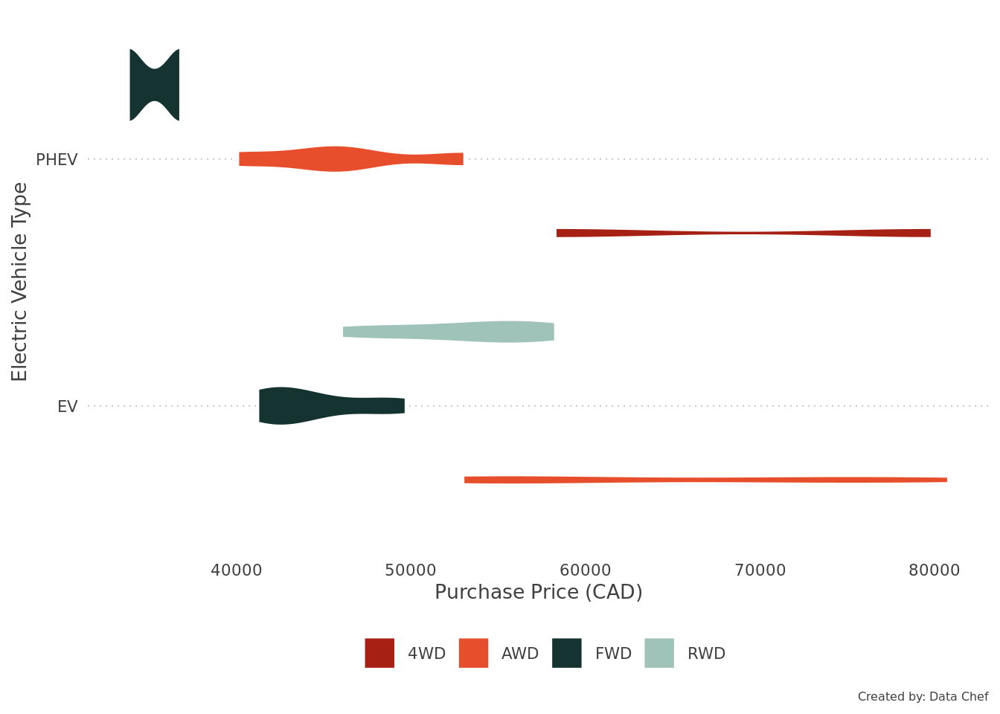
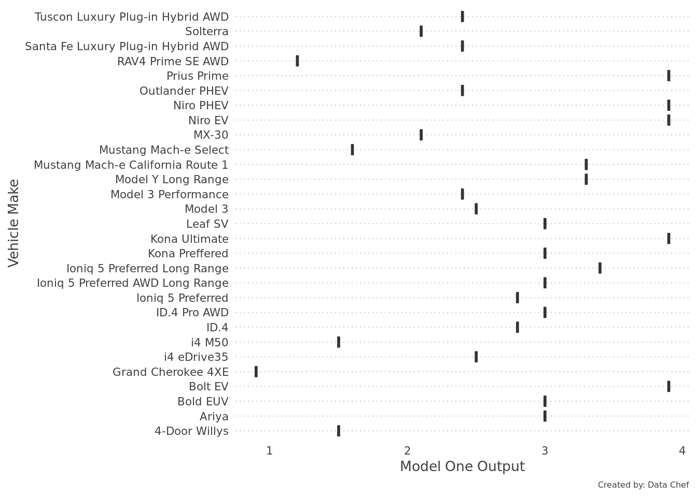
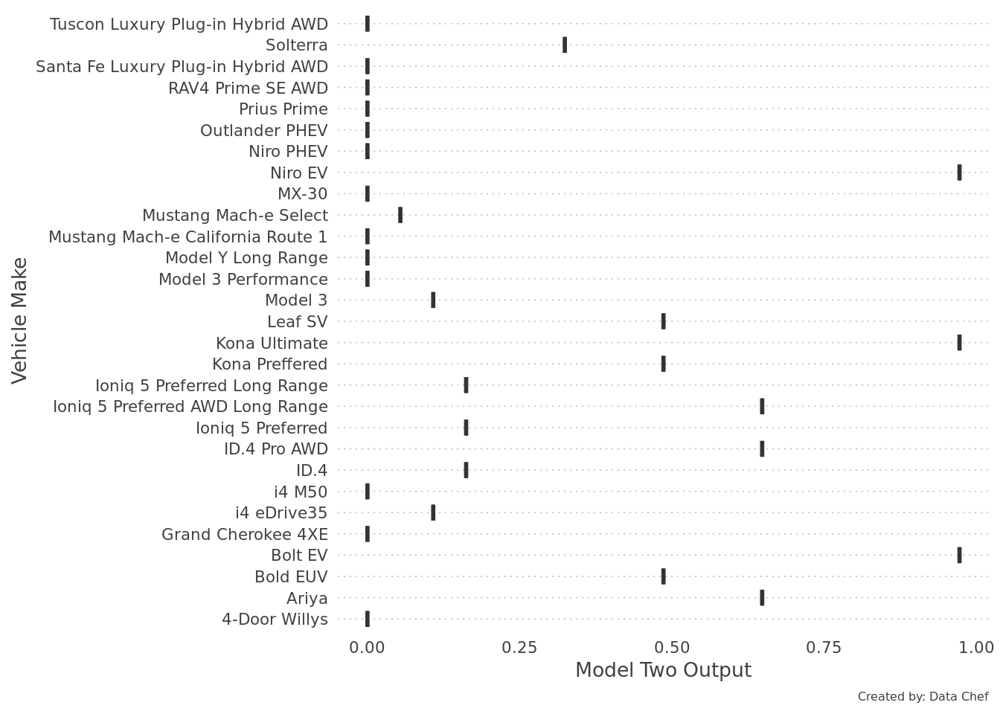

# Data access package
library(readr)
# Data wrangling package
library(dplyr)
# Data presentation packages
library(ggplot2)
library(DT)Purpose
Electric vehicles (EV) are increasing in popularity, by both the consumer and automakers. There are a significant number of EV available on the market, each having different features and characteristics. With EVs being relatively new to the vehicle market, it can be very difficult to know which EVs to consider as a new vehicle. Within this story we will present a data driven approach for making an informed decision when looking for new electric vehicles. A number of EVs will be evaluated based on objective features, omitting things like appearance, style, etc. A custom analytical model will be created to analyze the features and suggest the top electric vehicles.
Story Setup
In order to tell a data story there are certain things that are required (i.e. packages, importing data, custom functions, etc.). This section outlines the required pieces to tell our data story.
Data about electric vehicles (manufacture, model, type, price, range, and drive train) were collected during the third week of March 2023, using Nova Scotia Canada as a location for calculating pricing. The type of electric vehicle was broken into two group full electric (EV) and plug-in hybrid electric (PHEV); non plug-in hybrid vehicles were omitted from the data collection.
# Data collected on electric vehicles
# Luxury electric vehicles were omitted from data collection
vehicles <- readr::read_csv("https://codeberg.org/data-chef/data-stories/raw/branch/main/data-stories-blogsite/stories/data/ev-vehicles.csv", col_types = cols())# Custom theme
data_chef_theme <- ggplot2::theme(
# Text -- title, subtitle, labels, and caption
plot.title = ggplot2::element_text(colour = "#404040", size = 14, family = "Roboto", face = "bold"),
plot.subtitle = ggplot2::element_text(colour = "#404040", size = 12, family = "Roboto"),
axis.title.x = ggplot2::element_text(colour = "#404040", size = 10, family = "Roboto"),
axis.title.y = ggplot2::element_text(colour = "#404040", size = 10, family = "Roboto"),
legend.title = ggplot2::element_text(colour = "#404040", size = 8, family = "Roboto"),
legend.text = ggplot2::element_text(colour = "#404040", size = 8, family = "Roboto"),
axis.text.x = ggplot2::element_text(colour = "#404040", size = 8, family = "Roboto"),
axis.text.y = ggplot2::element_text(colour = "#404040", size = 8, family = "Roboto"),
plot.caption = ggplot2::element_text(colour = "#404040", size = 6, family = "Roboto"),
# Chart elements -- grids
panel.grid.major.x = ggplot2::element_blank(),
panel.grid.major.y = ggplot2::element_line(colour = "#BFBFBF", linetype = "dotted", linewidth = 0.3),
panel.grid.minor.x = ggplot2::element_blank(),
panel.grid.minor.y = ggplot2::element_blank(),
panel.background = element_blank()
)
Data Exploration
An essential aspect of all data analysis is exploring the data. Through the exploration you become familiar with the elements that are available within the dataset(s), as well as the potential analysis that can be performed with the dataset(s).
There were 29 vehicles from 13 car manufactures being evaluated.
Distribution of EV and PHEV vehicles

Distribution of vehicles by type, price, and drive train

Modelling
When developing a model specific parameters are needed in order to make an objective evaluation. The main constraint for this model was the ability to drive exclusively using electric power, without limitations (i.e. city, highway, etc.). Because of this requirement only pure electric vehicles and plug-in hybrid vehicles were considered.
There key factors to the model are
- Affordability
- Driving range
- Drive train
Affordability
The purchase cost of the vehicle is a very important factor for many. The price is considered the advertised price pre taxes, in Canadian dollars, based on a purchase in Nova Scotia. Federal and provincial EV incentives were excluded.
Driving range
The EVs primary usage would be for daily commuting, with a round trip distance of ~60 kms, with the need for extended distance to account for slight variations that are likely to occur daily (i.e. running errands, construction detours, etc.). While daily commuting is the main purpose for the EV, it would be great to be able to use the vehicle for other reasons, specifically lifestyle related activities, such as camping, surfing, skiing, or staycation road trips. The addition of lifestyle means a greater driving range would be desirable.
Drive train
Seasonal variations can have significant impacts on driving conditions in Nova Scotia. The weather during the spring, fall, and winter can produce challenging driving conditions. One method to combat difficult road conditions is to have a drive train system that provides more traction.
Feature Engineering
The format of the data collected on the EVs is not conducive to support the design of the model. Rather than modifying the source data (i.e. changing the values to reflected the desired data format values) new features, or attributes, will be created using the source values.
Feature engineering entails reformatting predictor values to make them easier for a model to use effectively. This includes transformations and encoding of the data to be represent their important characteristics
Tidy Modeling with R
Max Kuhn & Julie Silge
Source data elements were used to created three features for use in the model. New features were encoding using values of 0, 1, 3, 6, and 9 providing a clear distinction between the values of the feature.
The following was used when creating new price features
| Price Range | Feature Encoding |
|---|---|
| Less than $30,000 | 9 |
| $30,000 to $40,000 | 6 |
| $40,000 to $50,000 | 3 |
| $50,000 to $60,000 | 1 |
| Greater than $60,000 | 0 |
# Function to create new feature
# Specific to electric vehicle price
create_price_feature <- function(.data, price_column){
.data |>
dplyr::mutate(price_value = dplyr::case_when(
{{price_column}} < 30000 ~ 9,
dplyr::between({{price_column}}, 30000, 40000) ~ 6,
dplyr::between({{price_column}}, 40000, 50000) ~ 3,
dplyr::between({{price_column}}, 50000, 60000) ~ 1,
{{price_column}} > 60000 ~ 0
))
}The following was used when creating new driving range (in kilometres) features
| Driving Range | Feature Encoding |
|---|---|
| Greater than 500km | 9 |
| 400 to 500km | 6 |
| 300 to 400km | 3 |
| 200 to 300km | 1 |
| Less than 200km | 0 |
# Function to create new feature
# Specific to electric vehicle range
create_range_feature <- function(.data, range_column){
.data |>
dplyr::mutate(range_value = dplyr::case_when(
{{range_column}} > 500 ~ 9,
dplyr::between({{range_column}}, 400, 500) ~ 6,
dplyr::between({{range_column}}, 300, 400) ~ 3,
dplyr::between({{range_column}}, 200, 300) ~ 1,
{{range_column}} < 200 ~ 0
))
}The following was used when creating new drive train features
| Drive Train | Feature Encoding |
|---|---|
| Four wheel drive (4WD) | 9 |
| All wheel drive (AWD) | 6 |
| Front wheel drive (FWD) | 3 |
| Rear wheel drive (RWD) | 1 |
# Function to create new feature
# Specific to electric vehicle drivetrain
create_drivetrain_feature <- function(.data, drivetrain_column){
.data |>
dplyr::mutate(drivetrain_value = dplyr::case_when(
{{drivetrain_column}} == "4WD" ~ 9,
{{drivetrain_column}} == "AWD" ~ 6,
{{drivetrain_column}} == "FWD" ~ 3,
{{drivetrain_column}} == "RWD" ~ 1
))
}vehicles |>
create_drivetrain_feature(drivetrain) |>
create_range_feature(range) |>
create_price_feature(price) |>
DT::datatable()
Designing a Model
The idea behind the model is to combine the three variables into a single value that can be used to objectively suggest which EVs meet the needs of the user. Using this idea, there are two methods to combine the variables, adding or multiplying. For this story two models will be designed, one using an additive approach, and the other using a multiply approach.
A critical aspect of the model is to have a weighting factor for each of the variables. The thought behind this was that some variables are more important than others.
weights <- list(price = 0.6, range = 0.3, drivetrain = 0.1)Model Variable Weights
| Variable | Weight |
|---|---|
| Price | 0.6 |
| Range | 0.3 |
| Drivetrain | 0.1 |
Model One
The approach of this model is to apply the variable weight to each variable and add each variable together
\[ (price * weightPrice) + (range * weightRange) + (drivetrain * weightDrivetrain) \]
model1 <- function(.data, manufacture, model, price, range, drivetrain){
.data |>
dplyr::mutate(model_output = ({{price}} * weights$price) + ({{range}} * weights$range) + ({{drivetrain}} * weights$drivetrain)) |>
dplyr::select({{manufacture}}, {{model}}, model_output)
}# Applying model one to the vehicle dataset
vehicles |>
model1(manufacture = make,
model = model,
price = price_value,
range = range_value,
drivetrain = drivetrain_value)
The top five electric vehicles identified from Model One are Chevy Bolt EV, Hyundai Kona Ultimate, Kia Niro EV, Kia Niro PHEV, Toyota Prius Prime
Model Two
The approach of this model is to apply the variable weight to each variable and multiply each variable together
\[ (price * weightPrice) * (range * weightRange) * (drivetrain * weightDrivetrain) \]
model2 <- function(.data, manufacture, model, price, range, drivetrain){
.data |>
dplyr::mutate(model_output = ({{price}} * weights$price) * ({{range}} * weights$range) * ({{drivetrain}} * weights$drivetrain)) |>
dplyr::select({{manufacture}}, {{model}}, model_output)
}# Applying model two to the vehicle dataset
vehicles |>
model2(manufacture = make,
model = model,
price = price_value,
range = range_value,
drivetrain = drivetrain_value)
The top five electric vehicles identified from Model Two are Chevy Bolt EV, Hyundai Kona Ultimate, Kia Niro EV, Hyundai Ioniq 5 Preferred AWD Long Range, Nissan Ariya, VW ID.4 Pro AWD
In Closing
The top 5 suggestions from each of the models (Model 1 and Model 2) vary slightly. The first 3 suggestions were the same, identifying Chevy Bolt EV, Hyundai Kona Ultimate, Kia Niro EV. The forth and fifth suggestions were different between the two models, with Kia Niro PHEV from Model 1 and Hyundai Ioniq 5 Preferred AWD Long Range from Model 2 as the forth suggestion, and Toyota Prius Prime from Model 1 and Nissan Ariya from Model 2 as the fifth suggestion.
The range in price for the top 5 vehicles from Model 1 was $33,840 to $49,700, where as Model 2 top 5 vehicles range were $41,550 to $57,660.
The suggestions from the two models for top 5 vehicles had a difference in driving range. Model 1 had a range from 40 kms to 483 kms, whereas Model 2 had a driving range from 407 kms to 490 kms.
Suggesting electric vehicles with a driving range under 100 kms is contrary to the design requirements. The weighting of price within the design of Model 1 (adding variables) over valued vehicles with a lower purchase price, whereas the design of Model 2 (multiplying variables) reduced the value of vehicles with an insufficient all electric driving range. For this reason, Model 2 is the preferred model, suggesting Chevy Bolt EV, Hyundai Kona Ultimate, Kia Niro EV, Hyundai Ioniq 5 Preferred AWD Long Range, Nissan Ariya, VW ID.4 Pro AWD as the top electric vehicles.